Discovery, UX , UI, User Testing, Accessibility, Handoff
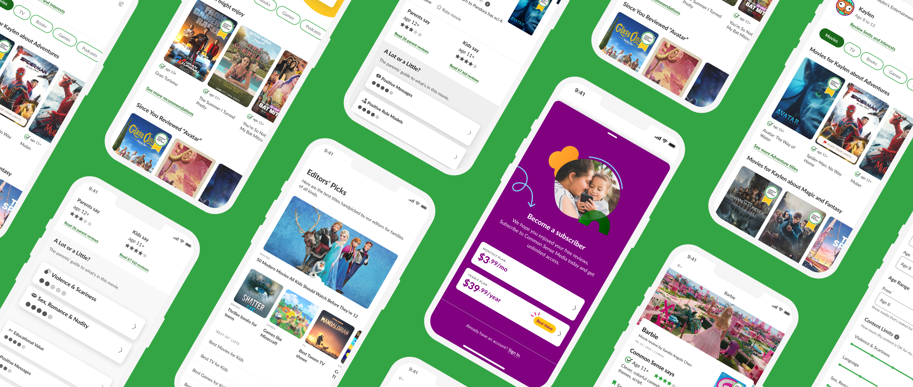
Since 2003, Common Sense Media has helped millions of families navigate the rapidly changing and growing ecosystem of movies, TV shows, games, and books – offering trusted expert and user reviews while helping parents understand the nature of sensitive content in each title.
The challenge of this project was taking the beloved and trusted web experience for CSM and streamlining it for a mobile experience. We created a cross-platform mobile app that not only leverage the core functionality and content of the website but also expanded its features to enhance usability and engagement. Additionally, we rolled out a new subscription model for the platform, introducing a fresh way for users to access gated content and tools.
Our guiding principle is simple: getting to "yes." The app enables parents to quickly find safe content for the whole family and make informed decisions about digital media based on their own guidelines. It also provides essential digital literacy resources for parents.
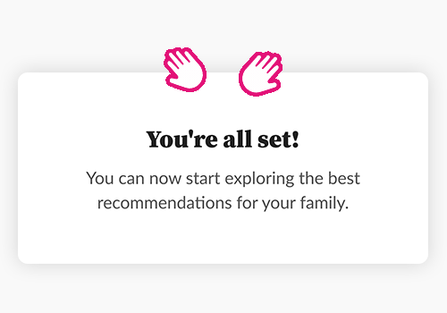
Discovery Sessions and UX Exploration
The discovery process for this project was a focused and collaborative effort conducted during the height of the pandemic. Over three days, we facilitated a remote workshop designed to uncover what would make sense for the product while leveraging strengths from the existing platform. The workshop covered key topics such as Product Overview, Success Metrics, Competitive Analysis, User Personas, User Journey Mapping, and Features Ideation.
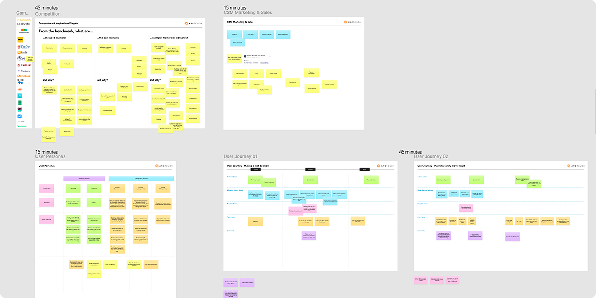
All key stakeholders were involved from the very beginning of the project, contributing their expertise and actively participating in the process.
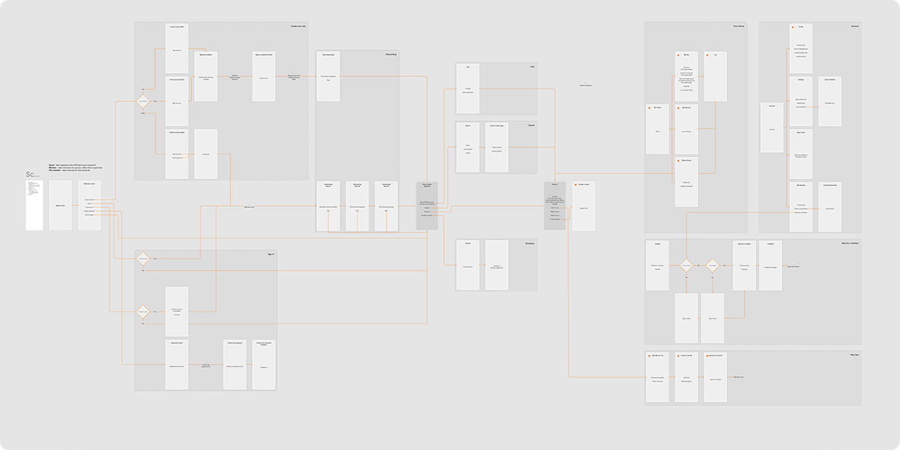
An initial diagram of the information architecture.
By the end of the sessions, we had a clear understanding of user needs, business goals, and market opportunities. This foundation allowed us to define the MVP scope of the product, ensuring it delivered maximum value while aligning with both user expectations and the platform’s long-term vision.
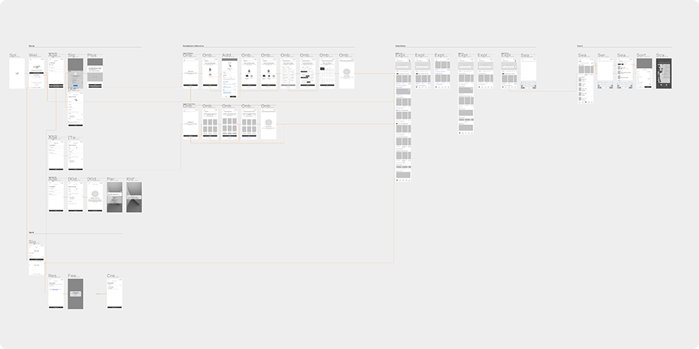
The wireframes enabled us to quickly gather feedback from the client and make iterative improvements.
UI Production
The challenge for the UI was to adapt and evolve the existing design system for a seamless mobile experience. It was crucial to maintain brand consistency with the website, ensuring the app felt familiar and recognizable to the existing user base. This meant carefully balancing innovation with familiarity—bringing fresh ideas to the mobile interface while staying true to the established visual identity and design principles of the platform.
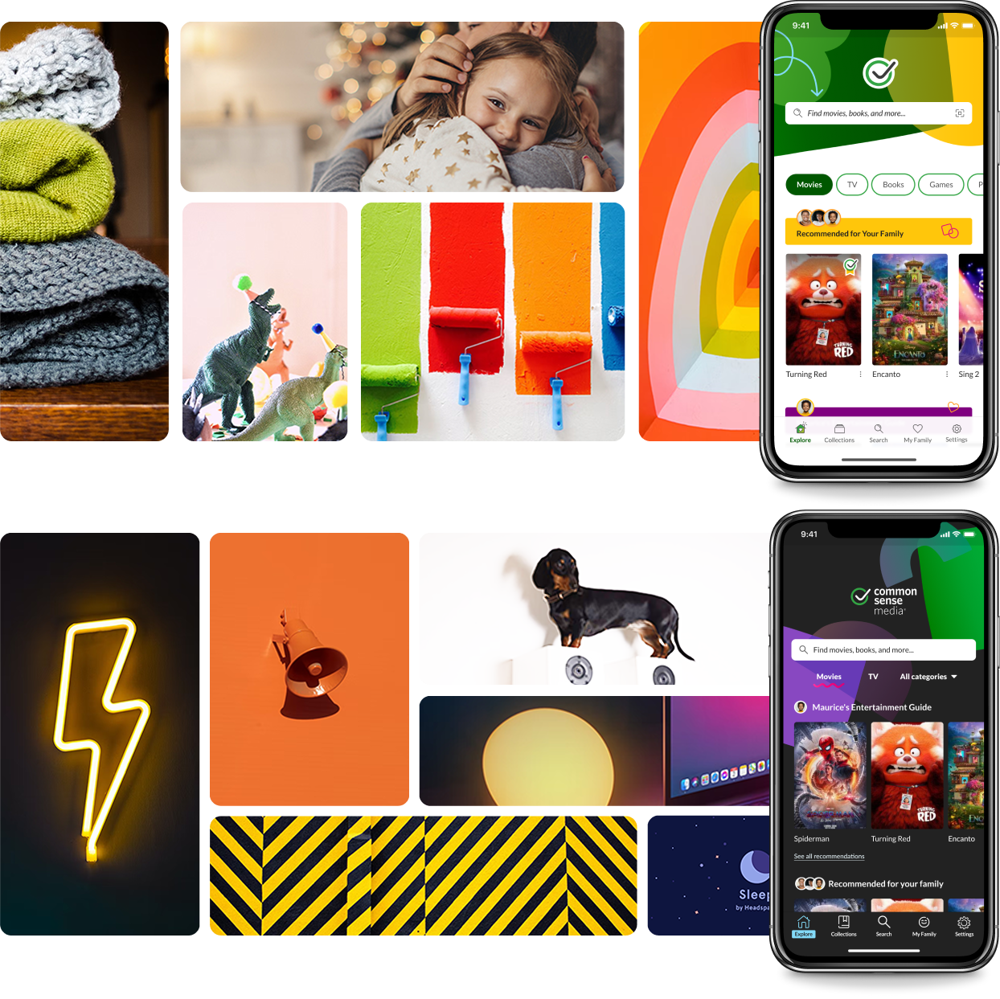
Examples of moodboards created for the UI development. One of them was inspired by a stakeholder's comment that "the app should feel warm, like a hug" 😊.
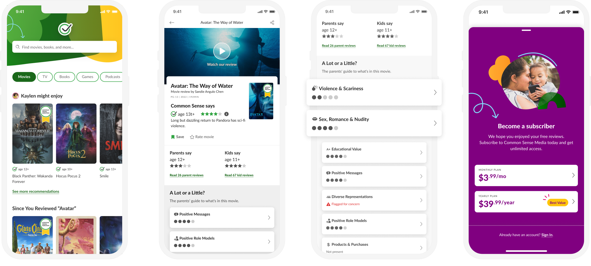
Examples of screens designed and ready for development.
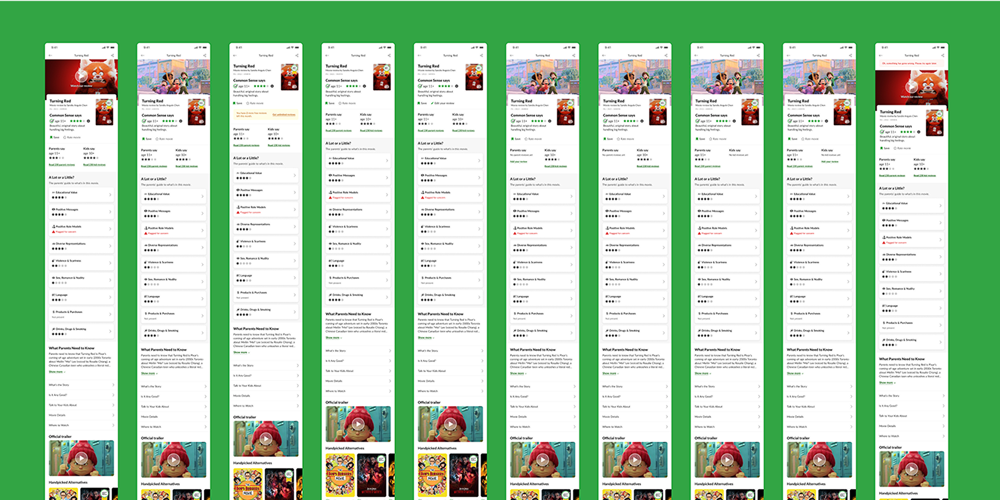
At this stage of development, we address all user scenarios and edge cases, as well as design components to effectively handle errors.
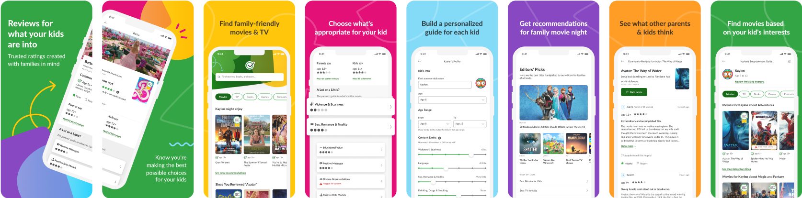
Marketing assets designed to promote the app on app store platforms.
Accessibility First
Accessibility was a core pillar of this project, ensuring the app was truly inclusive and usable for everyone. Beyond following standard best practices, we went deeper by creating detailed annotations for assistive technologies like VoiceOver and TalkBack, defining focus order, supporting font scaling, and addressing edge cases to enhance usability.
To take it further, we partnered with real assistive technology users through the Fable platform, gathering invaluable insights that helped us refine the experience. This commitment allowed us to design an app that prioritizes accessibility at every level, making it functional and enjoyable for all users.
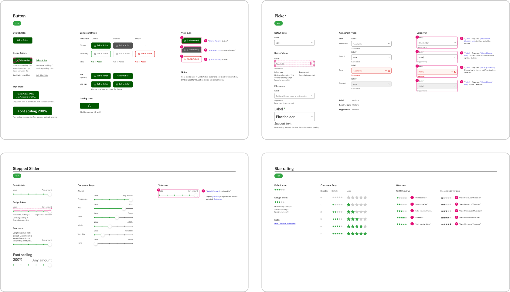
Documented components with detailed instructions for screen readers and font-scaling use cases.
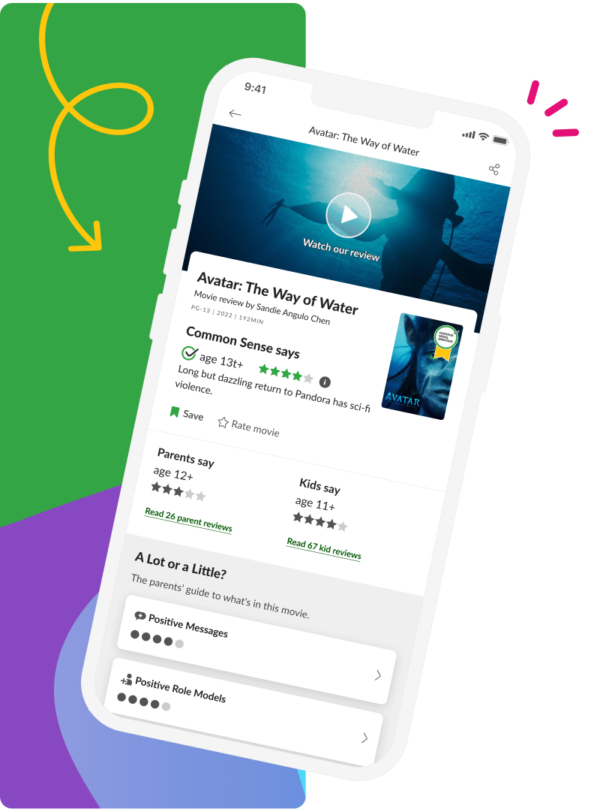
[The team's] commitment to building accessible software aligns perfectly with our values. They’ve been a tremendous partner and created an app that provides an inclusive and enjoyable experience for everyone.
— Ellen Pack, President of Common Sense Media
Paulo is extremely user-centric and constantly bring great ideas and solutions to the table. I was very impressed with how he organizes his work on Figma, and the amount of details and specifications he adds to it. [...] Also, is very reasonable with the problems that emerge.
— Thais Norberlandi, Project Manager
Recognition
4.8Out of 5 Stars
From 543 App Store reviews (June 2024)
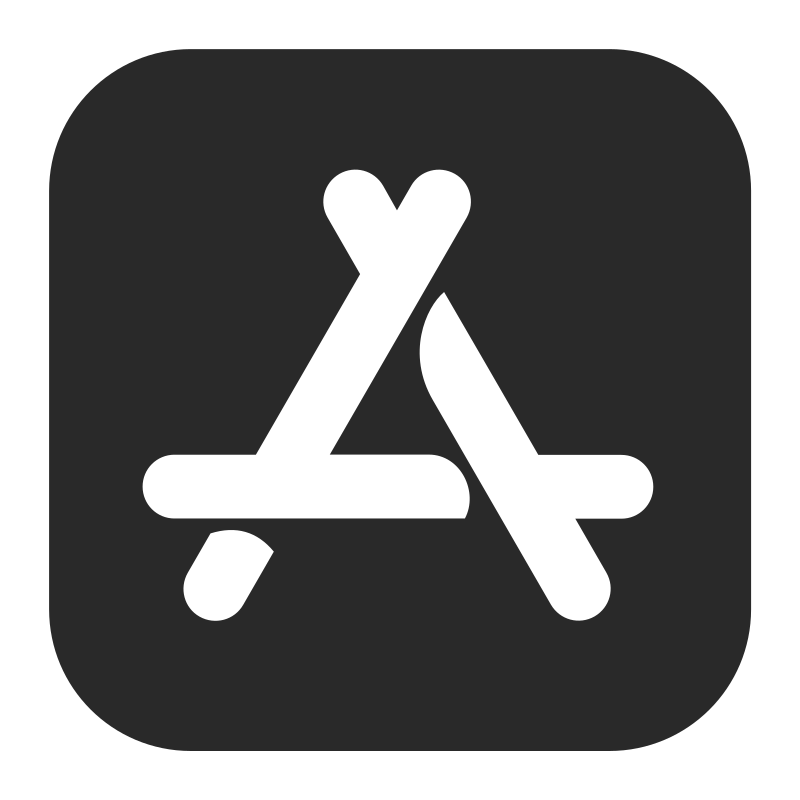
Featured on App Store
Editor's Choice
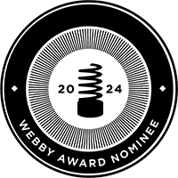
Webby Awards Nominee
Kids & Family Apps & Software
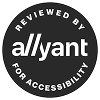
Audit by Allyant for Accessibility
This portfolio is private
Enter the password to continue, or message me if you need it!